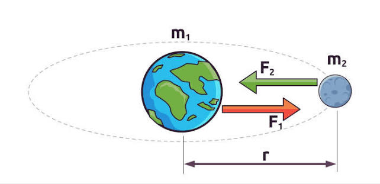

Gravitação
A gravitação é a força fundamental de atração que age entre todos os objetos do universo devido às suas massas. Formulada por Isaac Newton em seu livro "Principia" em 1687, a Lei da Gravitação Universal unificou a física celeste e a terrestre ao demonstrar que a mesma força que faz uma maçã cair dita a órbita dos planetas ao redor do Sol.
Conceitos Fundamentais:
Ação e Reação: A força exercida pela Terra sobre a Lua tem exatamente a mesma intensidade que a força que a Lua exerce sobre a Terra (terceira lei de Newton).
Efeito da Distância: Como a força depende do inverso do quadrado da distância, se você dobrar a distância entre dois objetos, a atração entre eles se reduz a um quarto (4x menor). Se triplicar, reduz-se a um nono.
Aceleração da Gravidade (g): Na superfície da Terra, a aceleração gerada por essa atração varia em torno de 9,8 m/s². Ela diminui à medida que nos afastamos do centro do planeta.
Aplicações Práticas:
As equações de gravitação são essenciais para:
- Calcular as órbitas e trajetórias de satélites artificiais e da Estação Espacial Internacional.
- Ajustar os sistemas de posicionamento global (GPS).
- Compreender o movimento das marés na Terra gerado pela atração da Lua e do Sol.